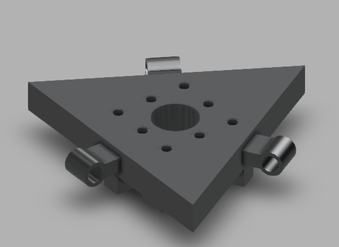

Visión general
Arquitectura del Sistema
El proyecto requirió la sincronización de tres dominios distintos: captura y procesamiento visual, envío de correcciones por red y actuación mecánica del efector final para lograr manipulación precisa en tiempo real.



Procesamiento de imágenes
Análisis de Imagen y Canny
Se implementó un servidor web en la ESP32-CAM para captura de imágenes. El procesamiento se realizó en Python con NumPy y OpenCV, aplicando el algoritmo Canny para identificar contornos y calcular la referencia de centrado del objeto.
def puntos_de_referencia(bordes):
x, y = np.nonzero(bordes)
_, cols = bordes.shape
bordes_color = cv2.cvtColor(bordes, cv2.COLOR_GRAY2BGR)
try:
cv2.circle(bordes_color, (y[0], x[0]), 10, (0, 0, 255), 1)
diferencia = 232 - y[0]
print(y[0])
except IndexError:
diferencia = None
return(bordes_color, diferencia)Actuación y red
Control de Servomotores
El error calculado determina las correcciones enviadas mediante peticiones HTTP al servidor de la ESP32-CAM. Los servos sin ajuste reciben el valor -1, minimizando el ancho de banda y simplificando el protocolo.
def http_post_servo(servo=-1, servo2=-1, servo3=-1,
servo4=-1, servo5=-1, time=1):
data = {"data": "{} {} {} {} {} ".format(
servo, servo2, servo3, servo4, servo5)}
response = requests.post(urlRaiz, data=data)
if response.status_code == 200:
print('Comando enviado correctamente')
else:
print("Failed to submit data")Estructura física
Diseño CAD y Hardware
El diseño se basó en el concepto de un robot tipo sumo. Se modelaron 9 piezas en Autodesk Fusion 360, optimizadas para reducir consumo de filamento PLA. El ensamblaje contempló restricciones mecánicas, acoplamiento directo a servomotores y protección de la circuitería mediante diodos de protección contra corrientes inversas.
Evaluación
Resultados y Trabajo Futuro
El sistema logró identificar y reubicar objetos en tiempo real, validando la integración de visión, red y actuación. Vectores de mejora identificados:
- Controladores: Algoritmos PID para suavizar movimientos y reducir oscilaciones.
- Cinemática: Control cinemático inverso para planificación de trayectorias precisa.
- Protocolo de Red: Migración de HTTP POST a WebSockets para minimizar latencia.
- Filtrado de Señal: Filtros de Kalman o media móvil para reducir ruido visual.
- Optimización CAD: Reducción de holguras en el mecanismo de transmisión.
Stack técnico